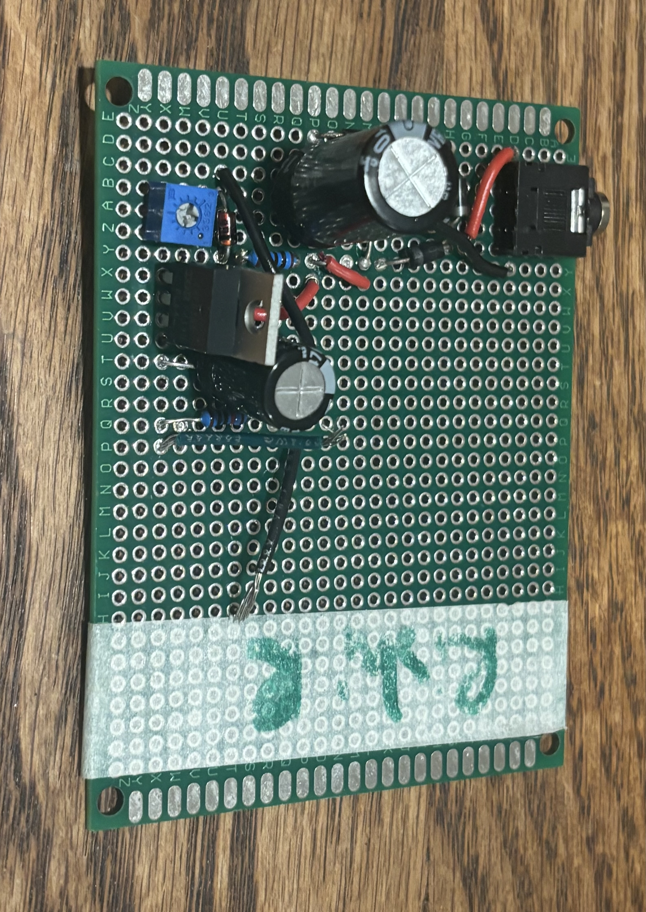

AC-DC Converter

I analyzed and built a variable output AC-DC voltage convertor on a PCB. I gradually built up the functionality and robustness of the convertor. The basic circuit used a wall outlet transformer and a full-wave rectifier built with diodes to convert from AC to DC. Then, I also used a capacitor and Zener diode to smooth out voltage signal fluctuations, included a potentiometer for variable output voltage. Finally, I added a voltage buffer to enable the circuit to connect to various loads with minimal output voltage degradation. I learned a lot about analyzing circuits and increasing their robustness through slowly making my convertor better!
